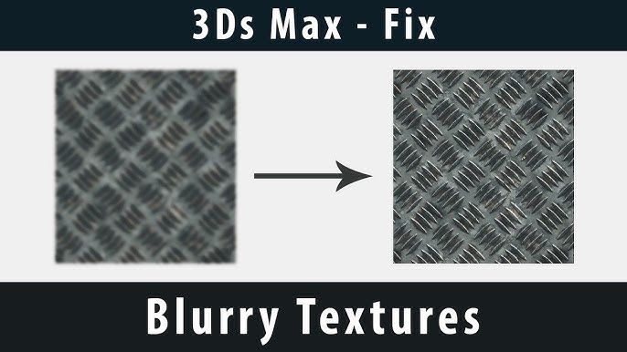

Tutorials
3DS Max: Solution to Reference Images appearing Blurry

This is a viewport config problem. Open up Max, and go into customize/User interface. Then go into the viewports tab, and go down to "configure driver". In there there will be a series of check boxes on the bottom, there are boxes for match bitmap... 3 different check boxes at the bottom... 2 say match bitmap, and the other is antialiased lines. Just check all 3 of those, and ALSO MAKE SURE YOU BRING YOUR BITMAP SIZED UP TO THE HIGHEST instead of 256 by default. Once this is done, apply it, close the window, and restart max for those settings to take effect.